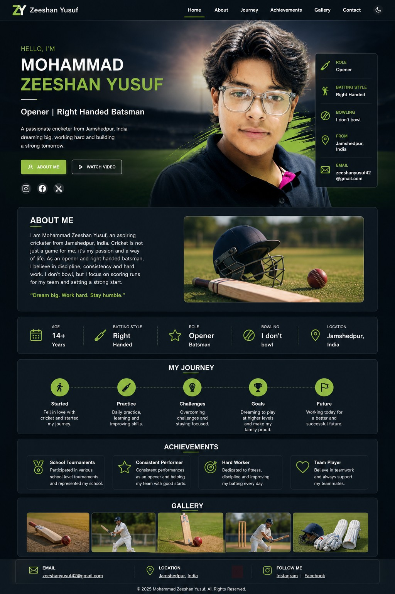

Gallery
Some moments from my cricket journey:


A passionate cricketer from Jamshedpur, India dreaming big, working hard and becoming stronger every single day.
About Me
I am Mohammad Zeeshan Yusuf, a dedicated right-handed opening batsman from Jamshedpur, India. Cricket is not just a sport for me — it's my passion and my dream career. I continuously work on improving my technique, fitness, and mental strength to compete at higher levels.
My cricket journey started at a young age playing in local grounds and school tournaments. Over time, I developed my skills through consistent practice, coaching, and match experience. I have participated in multiple local competitions and continue to push myself to reach professional standards.
Some moments from my cricket journey:
Email: your@email.com
Phone: +91 XXXXX XXXXX
Follow me:
Instagram | Facebook | Twitter